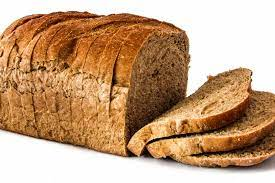
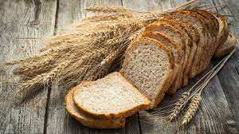
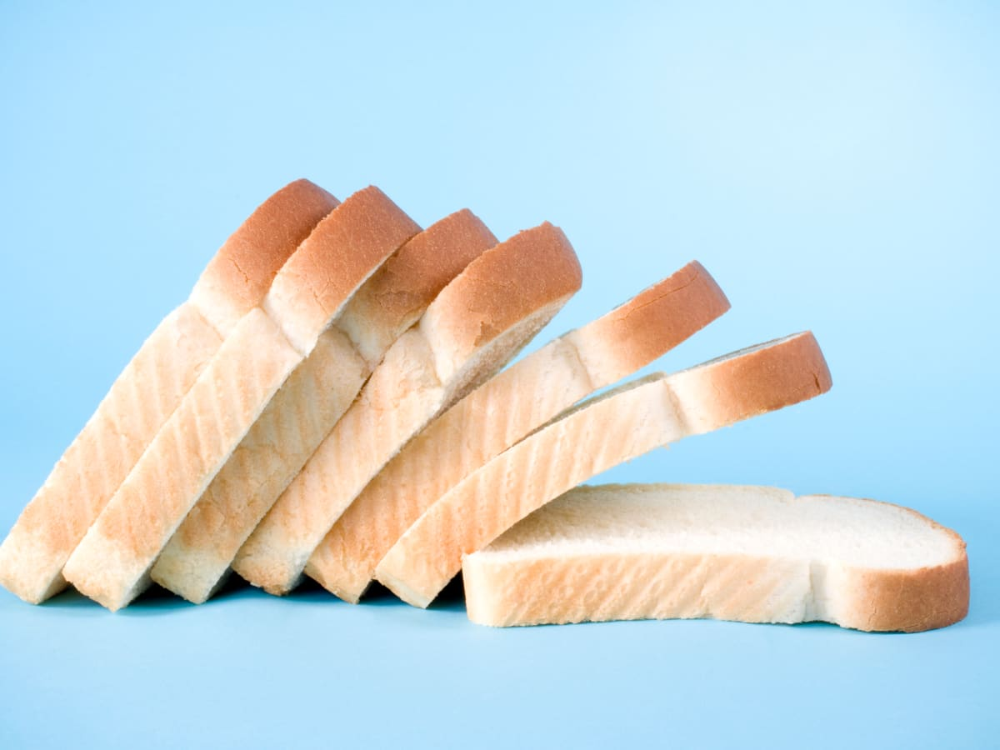
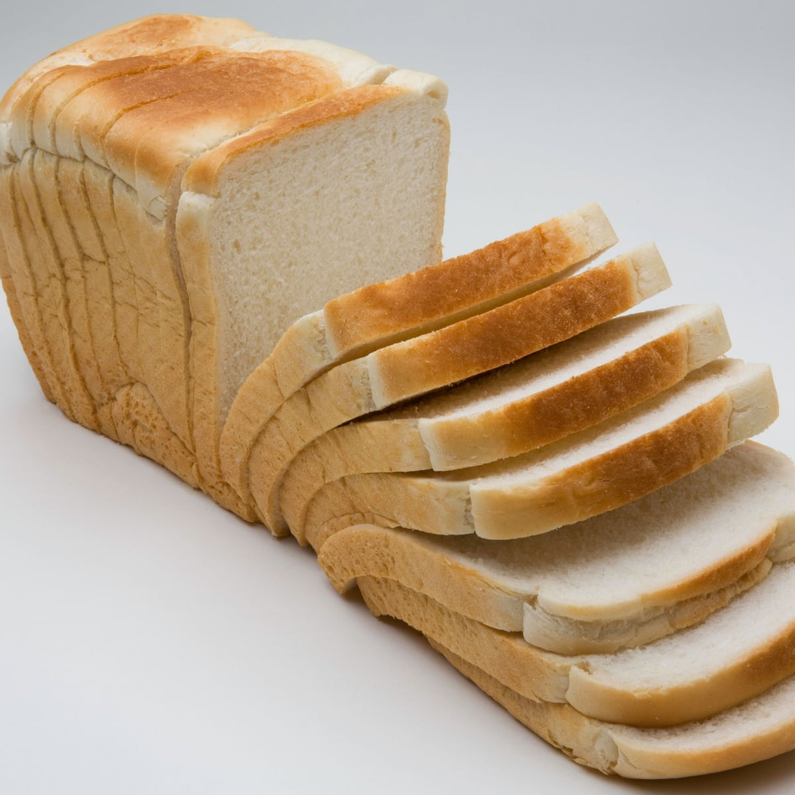
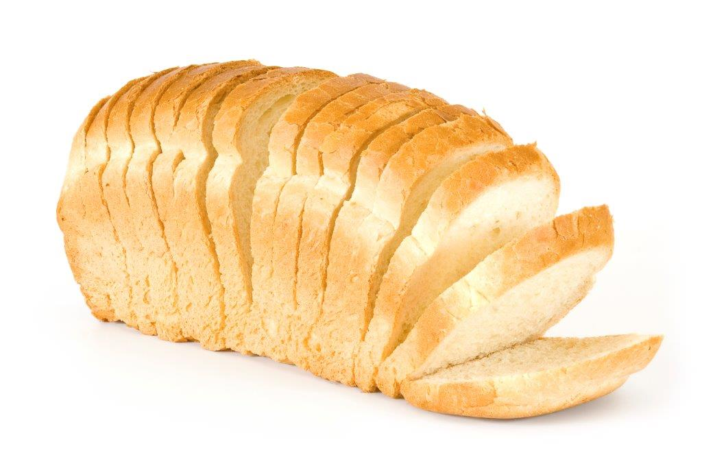
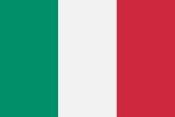
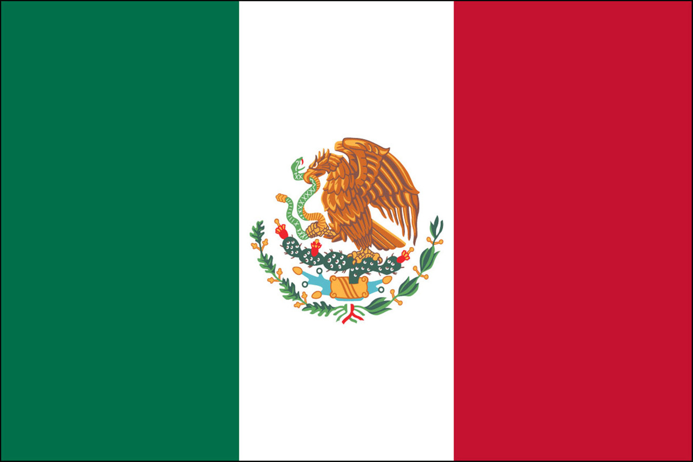

All about the Wonderful World of Food
There are many diffrent types of food across the world and many different ways to prepare and eat it!
All this knowledge comes from the
WFO
. My personal favorite type of food is bread sliced bread,
a fancy invention that probably came from the Middle East. I could go on and on about its many different types
and flavors. The crusty Belgian bread made from fresh wheat that grew on the Rhine River or how about the
soft and a tad salty Ibirian bread that shows how bread is a part of their culture. Another fine bread is the one
made by the Russians; You can clearly see their transformation from nomadic to settled lifestyle in their bread taste, and
their great use of butter is also a very interesting choice!
|  |
 |
 |
 |
 |
There are also other types of food too, of course, which I explore on this website! The three I go into great detail
about are pizza, which is mostly an Italian invention, Bread, which I feel are American as apple pie, and tacos,
which of course bring to mind Mexico!
|  |
 |
 |